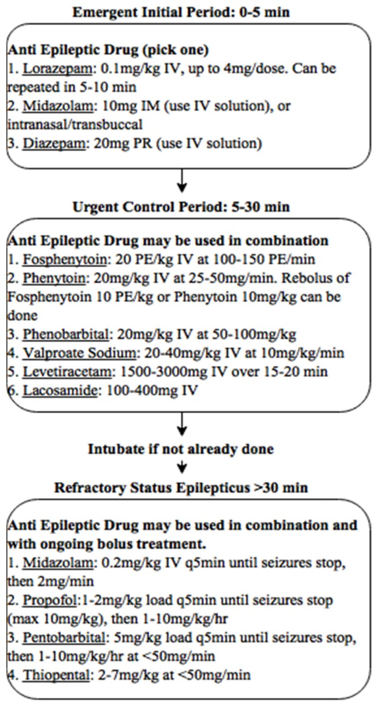

Dado impactante · Pág. 09 de 20 · figura-herói
TCG: tônico, clônico (fadiga) e o marco dos 5 minutos
1–2 minutos. Em geral não passa de 5. Passou de 5 — outro jogo. A duração típica da TCG é curta; o que a torna status é o tempo, não a intensidade.
A tônico-clônica generalizada é a crise que mais se vê na rua e na emergência — e pode ser o destino final de outras crises. Entender a sua história natural em tempo é o que separa “está acabando” de “virou status”.
<5 min · típico >5 min → status (eixo de manejo)
TCG: motor + consciência
A TCG é a crise mais vista na rua/emergência; destino final possível de outras. Atinge a via motora e a da consciência → consciência perdida + hiperativação motora. Quadro clínico rico.
Tônico → clônico por fadiga
Fase tônica: neurônios motores em atividade excessiva → contração sustentada → paciente “duro”. Sem inibição eficaz imediata, os neurônios fadigam (esgotam energia). Fadiga intermitente: duro → mole → duro → mole = abalos clônicos.
Regra de ouro: os abalos clônicos sinalizam que o neurônio começou a fadigar e a crise tende a acabar — não é agravamento, é exaustão.
Pós-ictal
Após o fim dos movimentos vem o período pós-ictal (ictus = evento) — recuperação lenta de orientação, identidade e memória do contexto (minutos a horas).
Riscos e status
Riscos: trauma por queda, queimadura, acidente de trânsito, afogamento. A TCG tem maior chance de evoluir para status (neurônio “incansável”; a inibição falha).
1–2 min e o marco 5 min
VFP [097]: duração típica 1–2 minutos; em geral não passa de 5 minutos (pode passar).
Caixa-nuance · [097] A literatura frequentemente cita 2–3 min (ou 1–3) como duração típica; a faixa 1–2 da fonte é didática aceitável e não contradiz o marco duro 5 min = status operacional. Pode-se ensinar “tipicamente 1–3 min; >5 min = trate como status”.
Fronteira (eixo de manejo): duração >5 min e estado de mal — tempos operacionais e protocolo ficam no bloco de manejo da crise em curso; aqui só a história natural e o risco.

Resumo operacional
Clônicos = fadiga; pós-ictal marca o evento; >5 min = ponte para status.
Por que importa
Confundir a clônica com “piora” leva a manobras inúteis; ignorar o marco dos 5 min atrasa o manejo do status.
Quiz
Conexão
Nem toda generalizada é TCG — há três generalizadas curtas que não seguem essa timeline.